import os
os.environ["CUDA_VISIBLE_DEVICES"] = "3"
import numpy as np
import matplotlib.pyplot as plt
import pandas as pd
import seaborn as sns
%matplotlib inline
# Retina display
%config InlineBackend.figure_format = 'retina'
import torch
import torch.nn as nn
torch.set_default_device("cuda")Train on all tasks
from tueplots import bundles
plt.rcParams.update(bundles.beamer_moml())
# Also add despine to the bundle using rcParams
plt.rcParams['axes.spines.right'] = False
plt.rcParams['axes.spines.top'] = False
# Increase font size to match Beamer template
plt.rcParams['font.size'] = 16
# Make background transparent
plt.rcParams['figure.facecolor'] = 'none'import torch.distributions as distμ_α = dist.Normal(0.0, 2.0)
σ_α =dist.HalfNormal(1.0)
μ_β = dist.Normal(0.0, 3.0)
σ_β = dist.HalfNormal(1.0)
n_tasks = 11torch.manual_seed(0)
μ_α_samples = μ_α.sample((n_tasks,))
σ_α_samples = σ_α.sample((n_tasks,))
μ_β_samples = μ_β.sample((n_tasks,))
σ_β_samples = σ_β.sample((n_tasks,))torch.manual_seed(0)
α = dist.Normal(μ_α_samples, σ_α_samples).sample()
β = dist.Normal(μ_β_samples, σ_β_samples).sample()
σ = dist.HalfNormal(5.0).sample((n_tasks,))x_lin = torch.linspace(-1, 1, 100)
true_fs = []
ys = []
for i in range(n_tasks):
true_fs.append(α[i] + β[i] * x_lin)
# Add noise
for i in range(n_tasks):
ys.append(dist.Normal(true_fs[i], σ[i]).sample())
# Normalize both x and y for all tasks
true_fs_norm = []
ys_norm = []
x_means_task = []
x_stds_task = []
y_means_task = []
y_stds_task = []
for i in range(n_tasks):
x_means_task.append(x_lin.mean())
x_stds_task.append(x_lin.std())
y_means_task.append(ys[i].mean())
y_stds_task.append(ys[i].std())
ys_norm.append((ys[i] - ys[i].mean()) / ys[i].std())
true_fs_norm.append((true_fs[i] - true_fs[i].mean()) / true_fs[i].std())# Plot the `n_tasks` functions with noise and the true functions in grid
# of 2 x 5
fig, axes = plt.subplots(2, 5, figsize=(8, 4), sharex=True, sharey=True)
for i, ax in enumerate(axes.flatten()):
ax.plot(x_lin.cpu(), true_fs[i].cpu(), label='True function')
ax.scatter(x_lin.cpu(), ys[i].cpu(), label='Data', s=4, alpha=0.2)
ax.set_xlabel('x')
ax.set_ylabel('y')
# Print the parameters in the title
ax.set_title(f'Task {i}\n α={α[i]:.2f}, β={β[i]:.2f}, σ={σ[i]:.2f}')
ax.legend()
plt.suptitle(r'True functions $(f(x) = \alpha + \beta x)$ and data $(y \sim \mathcal{N}(f(x), \sigma))$')
plt.savefig("../diagrams/metalearning/true.pdf", bbox_inches="tight")findfont: Font family ['cursive'] not found. Falling back to DejaVu Sans.
findfont: Generic family 'cursive' not found because none of the following families were found: Apple Chancery, Textile, Zapf Chancery, Sand, Script MT, Felipa, Comic Neue, Comic Sans MS, cursive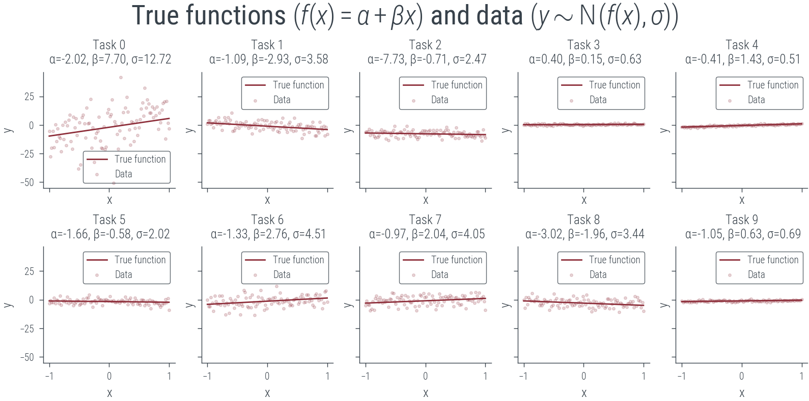
# Plot the normalized functions and data in grid of 2 x 5
fig, axes = plt.subplots(2, 5, figsize=(8, 4), sharex=True, sharey=True)
for i, ax in enumerate(axes.flatten()):
ax.plot(x_lin.cpu(), true_fs_norm[i].cpu(), label='True function')
ax.scatter(x_lin.cpu(), ys_norm[i].cpu(), label='Data', s=4, alpha=0.2)
ax.set_xlabel('x')
ax.set_ylabel('y')
ax.set_title(f'Task {i}\n α={α[i]:.2f}, β={β[i]:.2f}, σ={σ[i]:.2f}')
ax.legend()
plt.suptitle(r'True functions $(f(x) = \alpha + \beta x)$ and data $(y \sim \mathcal{N}(f(x), \sigma))$')Text(0.5, 0.98, 'True functions $(f(x) = \\alpha + \\beta x)$ and data $(y \\sim \\mathcal{N}(f(x), \\sigma))$')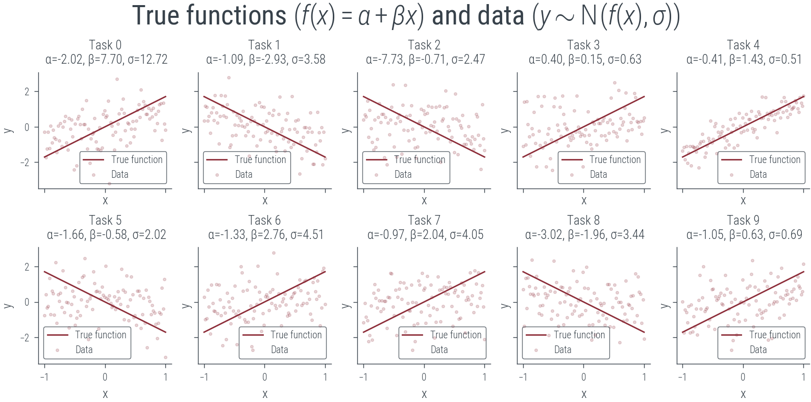
torch.manual_seed(0)
# Plot the last task with few data points (context)
context_size = 5
context_idx = torch.randperm(100)[:context_size]
context_x = x_lin[context_idx]
context_y = ys[-1][context_idx]
plt.scatter(context_x.cpu(), context_y.cpu(), label='Context', s=20, color='k')
plt.plot(x_lin.cpu(), true_fs[-1].cpu(), label='True function (to estimate)')
plt.xlabel('x')
plt.ylabel('y')
plt.legend()
plt.title("New Task")
plt.savefig("../diagrams/metalearning/context.pdf", bbox_inches="tight")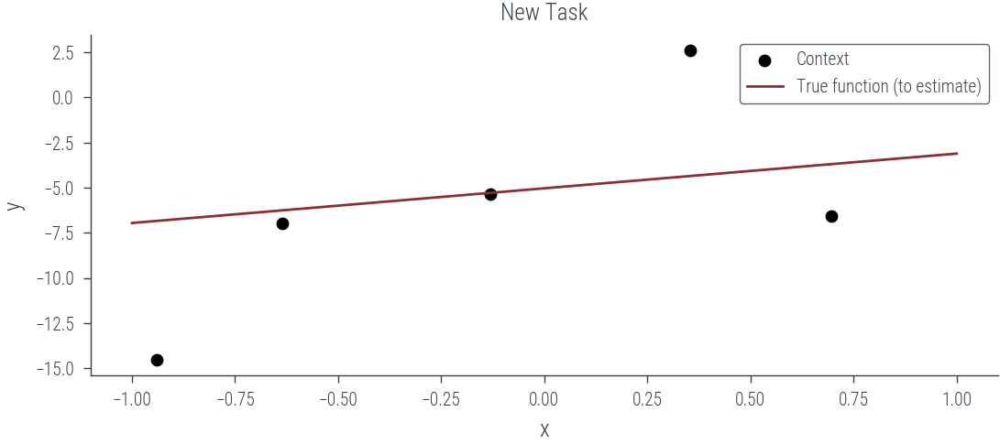
torch.manual_seed(0)
# Split data across each task into train and test sets
x_train = []
y_train = []
x_test = []
y_test = []
for i in range(n_tasks):
# For each task, divide the data into 50% train and 50% context randomly
r_perm = torch.randperm(100)
train_idx = r_perm[:50]
test_idx = r_perm[50:]
x_train.append(x_lin[train_idx])
y_train.append(ys_norm[i][train_idx])
print(x_train[i].shape, y_train[i].shape)
x_test.append(x_lin[test_idx])
y_test.append(ys_norm[i][test_idx])
# Plot the train and test sets for each task
fig, axes = plt.subplots(2, 5, figsize=(8, 4), sharex=True, sharey=True)
for i, ax in enumerate(axes.flatten()):
ax.scatter(x_train[i].cpu(), y_train[i].cpu(), label='Train', s=4)
ax.scatter(x_test[i].cpu(), y_test[i].cpu(), label='Context', s=4)
ax.set_xlabel('x')
ax.set_ylabel('y')
ax.set_title(f'Task {i}')
ax.legend()
torch.Size([50]) torch.Size([50])
torch.Size([50]) torch.Size([50])
torch.Size([50]) torch.Size([50])
torch.Size([50]) torch.Size([50])
torch.Size([50]) torch.Size([50])
torch.Size([50]) torch.Size([50])
torch.Size([50]) torch.Size([50])
torch.Size([50]) torch.Size([50])
torch.Size([50]) torch.Size([50])
torch.Size([50]) torch.Size([50])
torch.Size([50]) torch.Size([50])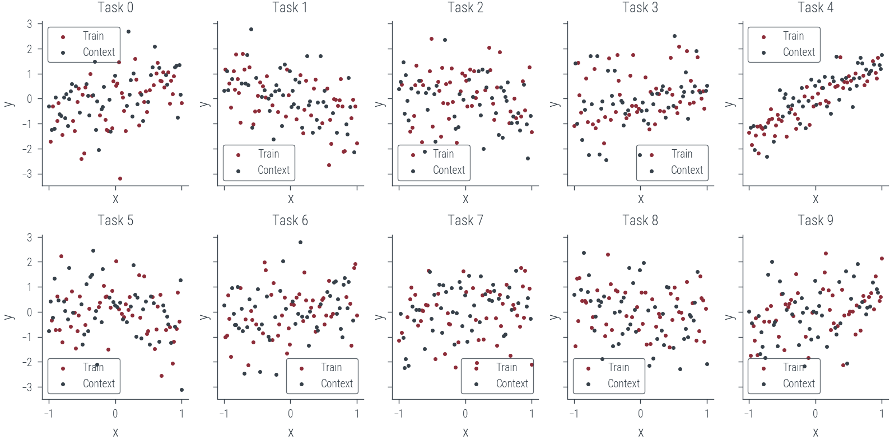
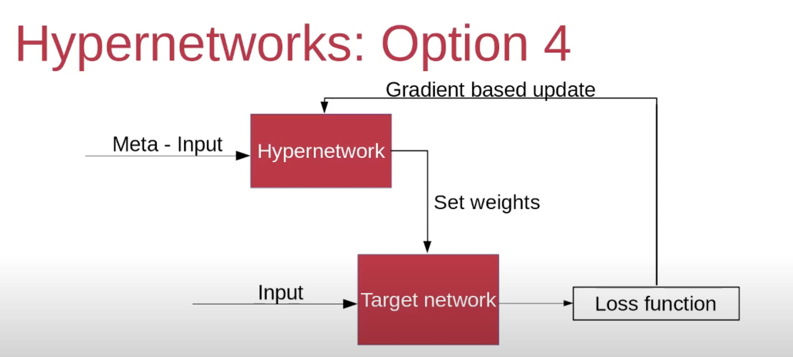
torch.manual_seed(0)
# Define the hyper-net and target-net
hyper_net = torch.nn.Sequential(torch.nn.Linear(2, 64), torch.nn.SELU(), torch.nn.Linear(64, 2))
target_net = torch.nn.Linear(1, 1)# Let us pick Task 0
task = 0
len_train = len(x_train[task])
x_train_task = x_train[task]
y_train_task = y_train[task]
# Context is 50% of the training data, last 50% is training data
x_c = x_train_task[:len_train // 2]
y_c = y_train_task[:len_train // 2]
x_t = x_train_task[len_train // 2:]
y_t = y_train_task[len_train // 2:]
# Concatenate x_c and y_c to form the context
context = torch.cat([x_c.view(-1, 1), y_c.view(-1, 1)], dim=1)
print(context.shape, x_t.shape, y_t.shape)torch.Size([25, 2]) torch.Size([25]) torch.Size([25])# Pass the context to the hyper-net to get output
hyper_out = hyper_net(context)hyper_out.shapetorch.Size([25, 2])# Average the output of the hyper-net to get the weights of the target-net
weights = hyper_out.mean(dim=0)
weights.shapetorch.Size([2])torch.manual_seed(0)
# Create a new target-net with the weight and bias from the hyper-net
target_net_new = torch.nn.Linear(1, 1)
print(target_net_new.weight.data, target_net_new.bias.data)
print(target_net_new.state_dict())
# Set the weights and bias of the new target-net from the hyper-net
target_net_new.weight.data = weights[:1].view(1, 1)
target_net_new.bias.data = weights[1:]
print(target_net_new.weight.data, target_net_new.bias.data)
print(target_net_new.state_dict())
# Create torch.func.functional_call to call the target-net with the
# weights and bias from the hyper-net
# and pass the test data to get the predictions
target_net_new = torch.nn.Linear(1, 1)
new_dict = target_net_new.state_dict()
new_dict.update({'weight': weights[:1].view(1, 1), 'bias': weights[1:]})
target_net_new.load_state_dict(new_dict)
print(target_net_new.weight.data, target_net_new.bias.data)
print(target_net_new.state_dict())tensor([[-0.2019]], device='cuda:0') tensor([0.9445], device='cuda:0')
OrderedDict([('weight', tensor([[-0.2019]], device='cuda:0')), ('bias', tensor([0.9445], device='cuda:0'))])
tensor([[-0.1925]], device='cuda:0') tensor([-0.2296], device='cuda:0')
OrderedDict([('weight', tensor([[-0.1925]], device='cuda:0')), ('bias', tensor([-0.2296], device='cuda:0'))])
tensor([[-0.1925]], device='cuda:0') tensor([-0.2296], device='cuda:0')
OrderedDict([('weight', tensor([[-0.1925]], device='cuda:0')), ('bias', tensor([-0.2296], device='cuda:0'))])# Predict on the train set with the new target-net
y_pred = target_net_new(x_t.view(-1, 1)).ravel()
criterion = torch.nn.MSELoss()
l = criterion(y_pred, y_t)
print(l)tensor(0.7359, device='cuda:0', grad_fn=<MseLossBackward0>)torch.manual_seed(0)
plt.scatter(x_t.cpu(), y_t.cpu(), label='Train')
plt.scatter(x_c.cpu(), y_c.cpu(), label='Context')
for i in range(10):
# Define hyper_net and target_net architectures
hyper_net = torch.nn.Sequential(torch.nn.Linear(2, 64), torch.nn.SELU(), torch.nn.Linear(64, 2))
target_net = torch.nn.Linear(1, 1) # Create a target_net
# Learnt function
with torch.no_grad():
plt.plot(x_lin.cpu(), target_net(x_lin.view(-1, 1)).cpu().ravel(), label=f'Learnt function {i}')
# Put legend outside the plot
plt.legend(bbox_to_anchor=(1.05, 1), loc='upper left')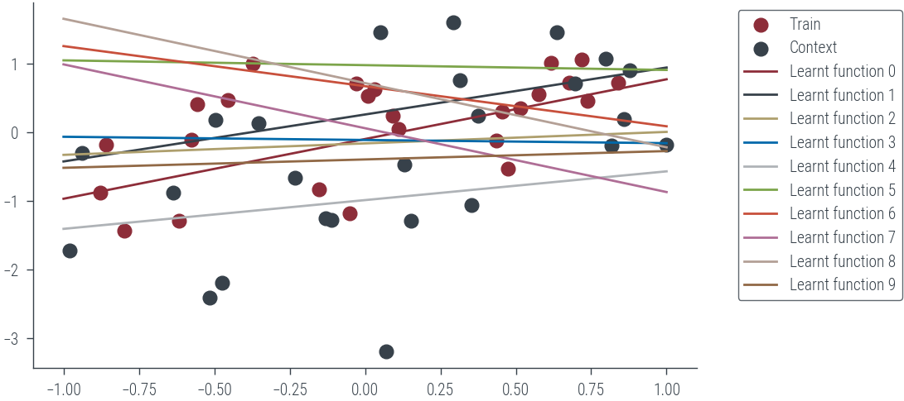
torch.manual_seed(0)
# Define hyper_net and target_net architectures
hyper_net = torch.nn.Sequential(torch.nn.Linear(2, 64), torch.nn.SELU(), torch.nn.Linear(64, 2))
target_net = torch.nn.Linear(1, 1) # Create a target_net
optimizer = torch.optim.Adam(hyper_net.parameters(), lr=0.01)
criterion = nn.MSELoss()
new_dict = target_net.state_dict()
for epoch in range(1000):
optimizer.zero_grad()
hyper_out = hyper_net(context)
weights = hyper_out.mean(dim=0)
new_dict.update({'weight': weights[:1].view(1, 1), 'bias': weights[1:]})
#target_net.load_state_dict(new_dict)
y_pred = torch.func.functional_call(target_net, new_dict, x_t.view(-1, 1)).ravel()
l = criterion(y_pred, y_t)
l.backward()
optimizer.step()
if epoch % 30 == 0:
print(f'Epoch {epoch} loss {l:.2f}')Epoch 0 loss 0.74
Epoch 30 loss 0.37
Epoch 60 loss 0.37
Epoch 90 loss 0.37
Epoch 120 loss 0.37
Epoch 150 loss 0.37
Epoch 180 loss 0.37
Epoch 210 loss 0.37
Epoch 240 loss 0.37
Epoch 270 loss 0.37
Epoch 300 loss 0.37
Epoch 330 loss 0.37
Epoch 360 loss 0.37
Epoch 390 loss 0.37
Epoch 420 loss 0.37
Epoch 450 loss 0.37
Epoch 480 loss 0.37
Epoch 510 loss 0.37
Epoch 540 loss 0.37
Epoch 570 loss 0.37
Epoch 600 loss 0.37
Epoch 630 loss 0.37
Epoch 660 loss 0.37
Epoch 690 loss 0.37
Epoch 720 loss 0.37
Epoch 750 loss 0.37
Epoch 780 loss 0.37
Epoch 810 loss 0.37
Epoch 840 loss 0.37
Epoch 870 loss 0.37
Epoch 900 loss 0.37
Epoch 930 loss 0.37
Epoch 960 loss 0.37
Epoch 990 loss 0.37plt.scatter(x_t.cpu(), y_t.cpu(), label='Train')
plt.scatter(x_c.cpu(), y_c.cpu(), label='Context')
# Learnt function
with torch.no_grad():
plt.plot(x_lin.cpu(), target_net(x_lin.view(-1, 1)).ravel().cpu(), label='Learnt function')
plt.legend()<matplotlib.legend.Legend at 0x7f8a3efa7bb0>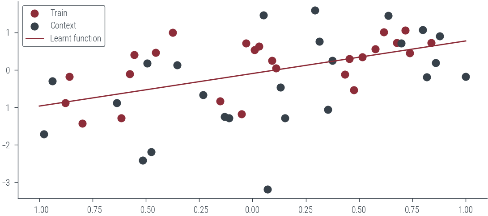
# Define hyper_net and target_net architectures
torch.manual_seed(0)
hyper_net = torch.nn.Sequential(torch.nn.Linear(2, 64), torch.nn.SELU(), torch.nn.Linear(64, 2))
target_net = torch.nn.Linear(1, 1) # Create a target_net
optimizer = torch.optim.Adam(hyper_net.parameters(), lr=0.01)
criterion = nn.MSELoss()
new_dict = target_net.state_dict()
for epoch in range(200):
for task in range(len(x_train)):
len_train = len(x_train[task])
x_train_task = x_train[task]
y_train_task = y_train[task]
# Context is 50% of the training data, last 50% is training data
x_c = x_train_task[:len_train // 2]
y_c = y_train_task[:len_train // 2]
x_t = x_train_task[len_train // 2:]
y_t = y_train_task[len_train // 2:]
# Concatenate x_c and y_c to form the context
context = torch.cat([x_c.view(-1, 1), y_c.view(-1, 1)], dim=1)
optimizer.zero_grad()
hyper_out = hyper_net(context)
weights = hyper_out.mean(dim=0)
new_dict.update({'weight': weights[:1].view(1, 1), 'bias': weights[1:]})
#target_net.load_state_dict(new_dict)
y_pred = torch.func.functional_call(target_net, new_dict, x_t.view(-1, 1)).ravel()
l = criterion(y_pred, y_t)
l.backward()
optimizer.step()
if epoch % 30 == 0:
print(f'Epoch {epoch} loss {l:.2f}')Epoch 0 loss 0.82
Epoch 30 loss 0.77
Epoch 60 loss 0.78
Epoch 90 loss 0.77
Epoch 120 loss 0.76
Epoch 150 loss 0.75
Epoch 180 loss 0.74Predict on all tasks
fig, axes = plt.subplots(2, 5, figsize=(8, 4), sharex=True, sharey=True)
axes = axes.flatten()
hyper_net.eval()
target_net.eval()
for task, ax in zip(range(len(x_train)), axes):
# Context is 50% of the training data, last 50% is training data
# x_c = x_train_task[:len_train // 2]
# y_c = y_train_task[:len_train // 2]
# x_t = x_train_task[len_train // 2:]
# y_t = y_train_task[len_train // 2:]
# Concatenate x_c and y_c to form the context
context = torch.cat([x_train[task].view(-1, 1), y_train[task].view(-1, 1)], dim=1)
# print("context", context.shape)
optimizer.zero_grad()
hyper_out = hyper_net(context)
weights = hyper_out.mean(dim=0)
new_dict.update({'weight': weights[:1].view(1, 1), 'bias': weights[1:]})
#target_net.load_state_dict(new_dict)
with torch.no_grad():
y_pred = torch.func.functional_call(target_net, new_dict, x_test[task].view(-1, 1)).ravel()
# print(y_pred.shape)
ax.scatter(x_train[task].cpu(), y_train[task].cpu(), label='Train', s=4)
ax.scatter(x_test[task].cpu(), y_test[task].cpu(), label='Context', s=4)
ax.plot(x_test[task].cpu(), y_pred.cpu(), label='Learnt function', color='k')
ax.set_xlabel('x')
ax.set_ylabel('y')
ax.set_title(f'Task {task}')
ax.legend()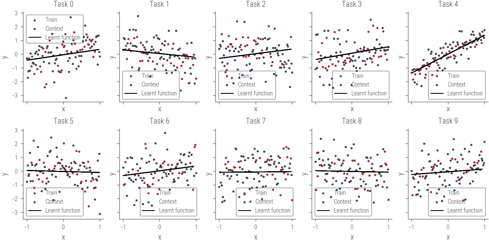
Predict on new task
fig, ax = plt.subplots()
# Concatenate x_c and y_c to form the context
context = torch.cat([x_train[-1].view(-1, 1), y_train[-1].view(-1, 1)], dim=1)
##########
# Cut the context to have only 5 points
#########
context = context[:5]
print("context", context.shape)
optimizer.zero_grad()
hyper_out = hyper_net(context)
weights = hyper_out.mean(dim=0)
new_dict.update({'weight': weights[:1].view(1, 1), 'bias': weights[1:]})
#target_net.load_state_dict(new_dict)
with torch.no_grad():
y_pred = torch.func.functional_call(target_net, new_dict, x_test[-1].view(-1, 1)).ravel()
# print(y_pred.shape)
ax.scatter(context[:, 0].cpu(), context[:, 1].cpu(), label='Train', s=4)
ax.scatter(x_test[-1].cpu(), y_test[-1].cpu(), label='Context', s=4)
ax.plot(x_test[-1].cpu(), y_pred.cpu(), label='Learnt function', color='k')
ax.set_xlabel('x')
ax.set_ylabel('y')
ax.set_title(f'-1 {i}')
ax.legend()context torch.Size([5, 2])<matplotlib.legend.Legend at 0x7f8a3ef97f10>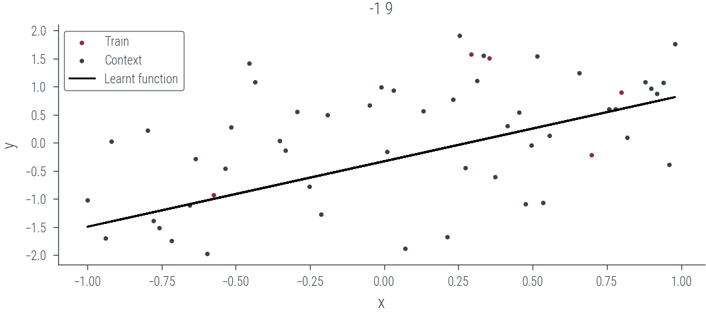
Neural Processes
encoder = torch.nn.Sequential(torch.nn.Linear(2, 128), torch.nn.ReLU(), torch.nn.Linear(128, 128))
decoder = torch.nn.Sequential(torch.nn.Linear(128+1, 128), torch.nn.ReLU(), torch.nn.Linear(128, 1))Train on a single task
# Let us pick Task 0
task = 4
len_train = len(x_train[task])
x_train_task = x_train[task]
y_train_task = y_train[task]
# Context is 50% of the training data, last 50% is training data
x_c = x_train_task[:len_train // 2]
y_c = y_train_task[:len_train // 2]
x_t = x_train_task[len_train // 2:]
y_t = y_train_task[len_train // 2:]
# Concatenate x_c and y_c to form the context
context = torch.cat([x_c.view(-1, 1), y_c.view(-1, 1)], dim=1)
print(context.shape, x_t.shape, y_t.shape)torch.Size([25, 2]) torch.Size([25]) torch.Size([25])representation = encoder(context)
representation = representation.mean(dim=0, keepdim=True)
print(representation.shape)torch.Size([1, 128])target_repr = representation.repeat(x_t.shape[0], 1)
print(target_repr.shape)torch.Size([25, 128])joint_target_x = torch.cat([target_repr, x_t.view(-1, 1)], dim=1)
print(joint_target_x.shape)torch.Size([25, 129])pred = decoder(joint_target_x)
print(pred.shape)torch.Size([25, 1])torch.manual_seed(0)
# Define hyper_net and target_net architectures
# hyper_net = torch.nn.Sequential(torch.nn.Linear(2, 64), torch.nn.SELU(), torch.nn.Linear(64, 2))
# target_net = torch.nn.Linear(1, 1) # Create a target_net
optimizer = torch.optim.Adam(list(encoder.parameters()) + list(decoder.parameters()), lr=1e-2)
criterion = nn.MSELoss()
for epoch in range(1000):
optimizer.zero_grad()
representation = encoder(context)
representation = representation.mean(dim=0, keepdim=True)
target_repr = representation.repeat(x_t.shape[0], 1)
joint_target_x = torch.cat([target_repr, x_t.view(-1, 1)], dim=1)
y_pred = decoder(joint_target_x)
l = criterion(y_pred, y_t)
l.backward()
optimizer.step()
if epoch % 30 == 0:
print(f'Epoch {epoch} loss {l:.2f}')Epoch 0 loss 1.09
Epoch 30 loss 1.00
Epoch 60 loss 1.00
Epoch 90 loss 1.00
Epoch 120 loss 1.00
Epoch 150 loss 1.00
Epoch 180 loss 1.00
Epoch 210 loss 1.00
Epoch 240 loss 1.00
Epoch 270 loss 1.00
Epoch 300 loss 1.00
Epoch 330 loss 1.00
Epoch 360 loss 1.00
Epoch 390 loss 1.00
Epoch 420 loss 1.00
Epoch 450 loss 1.00
Epoch 480 loss 1.00
Epoch 510 loss 1.00
Epoch 540 loss 1.00
Epoch 570 loss 1.00
Epoch 600 loss 1.00
Epoch 630 loss 1.00
Epoch 660 loss 1.00
Epoch 690 loss 1.00
Epoch 720 loss 1.00
Epoch 750 loss 1.00
Epoch 780 loss 1.00
Epoch 810 loss 1.00
Epoch 840 loss 1.00
Epoch 870 loss 1.00
Epoch 900 loss 1.00
Epoch 930 loss 1.00
Epoch 960 loss 1.00
Epoch 990 loss 1.00/home/nipun.batra/miniforge3/lib/python3.9/site-packages/torch/utils/_device.py:62: UserWarning: Using a target size (torch.Size([25])) that is different to the input size (torch.Size([25, 1])). This will likely lead to incorrect results due to broadcasting. Please ensure they have the same size.
return func(*args, **kwargs)plt.scatter(x_t.cpu(), y_t.cpu(), label='Train')
plt.scatter(x_c.cpu(), y_c.cpu(), label='Context')
# Learnt function
with torch.no_grad():
representation = encoder(context)
representation = representation.mean(dim=0, keepdim=True)
target_repr = representation.repeat(x_lin.shape[0], 1)
print(target_repr.shape, x_lin.shape)
joint_target_x = torch.cat([target_repr, x_lin.view(-1, 1)], dim=1)
plt.plot(x_lin.cpu(), decoder(joint_target_x).ravel().cpu(), label='Learnt function')
plt.legend();torch.Size([100, 128]) torch.Size([100])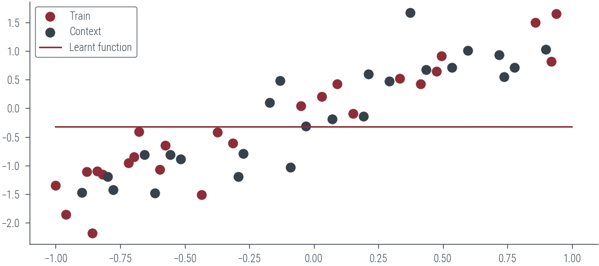
Train on all tasks
# Define hyper_net and target_net architectures
torch.manual_seed(0)
encoder = torch.nn.Sequential(torch.nn.Linear(2, 8), torch.nn.ReLU(), torch.nn.Linear(8, 8))
decoder = torch.nn.Sequential(torch.nn.Linear(8+1, 8), torch.nn.ReLU(), torch.nn.Linear(8, 1))
optimizer = torch.optim.Adam(list(encoder.parameters()) + list(decoder.parameters()), lr=0.001)
criterion = nn.MSELoss()
new_dict = target_net.state_dict()
for epoch in range(300):
for task in range(len(x_train)):
len_train = len(x_train[task])
x_train_task = x_train[task]
y_train_task = y_train[task]
# Context is 50% of the training data, last 50% is training data
x_c = x_train_task[:len_train // 2]
y_c = y_train_task[:len_train // 2]
x_t = x_train_task[len_train // 2:]
y_t = y_train_task[len_train // 2:]
# Concatenate x_c and y_c to form the context
context = torch.cat([x_c.view(-1, 1), y_c.view(-1, 1)], dim=1)
optimizer.zero_grad()
representation = encoder(context)
representation = representation.mean(dim=0, keepdim=True)
target_repr = representation.repeat(x_t.shape[0], 1)
joint_target_x = torch.cat([target_repr, x_t.view(-1, 1)], dim=1)
y_pred = decoder(joint_target_x)
l = criterion(y_pred, y_t)
l.backward()
optimizer.step()
if epoch % 30 == 0:
print(f'Epoch {epoch} loss {l:.2f}')/home/nipun.batra/miniforge3/lib/python3.9/site-packages/torch/utils/_device.py:62: UserWarning: Using a target size (torch.Size([25])) that is different to the input size (torch.Size([25, 1])). This will likely lead to incorrect results due to broadcasting. Please ensure they have the same size.
return func(*args, **kwargs)Epoch 0 loss 0.73
Epoch 30 loss 0.72
Epoch 60 loss 0.72
Epoch 90 loss 0.72
Epoch 120 loss 0.72
Epoch 150 loss 0.72
Epoch 180 loss 0.72
Epoch 210 loss 0.72Predict on all tasks
fig, axes = plt.subplots(2, 5, figsize=(8, 4), sharex=True, sharey=True)
axes = axes.flatten()
encoder.eval()
decoder.eval()
for task, ax in zip(range(len(x_train)), axes):
# Context is 50% of the training data, last 50% is training data
# x_c = x_train_task[:len_train // 2]
# y_c = y_train_task[:len_train // 2]
# x_t = x_train_task[len_train // 2:]
# y_t = y_train_task[len_train // 2:]
# Concatenate x_c and y_c to form the context
context = torch.cat([x_train[task].view(-1, 1), y_train[task].view(-1, 1)], dim=1)
# print("context", context.shape)
optimizer.zero_grad()
representation = encoder(context)
representation = representation.mean(dim=0, keepdim=True)
# print(representation)
target_repr = representation.repeat(x_test[task].shape[0], 1)
joint_target_x = torch.cat([target_repr, x_test[task].view(-1, 1)], dim=1)
with torch.no_grad():
y_pred = decoder(joint_target_x).ravel()
# print(y_pred)
# print(y_pred.shape)
ax.scatter(x_train[task].cpu(), y_train[task].cpu(), label='Train', s=4)
ax.scatter(x_test[task].cpu(), y_test[task].cpu(), label='Context', s=4)
ax.plot(x_test[task].cpu(), y_pred.cpu(), label='Learnt function', color='k')
ax.set_xlabel('x')
ax.set_ylabel('y')
ax.set_title(f'Task {task}')
ax.legend()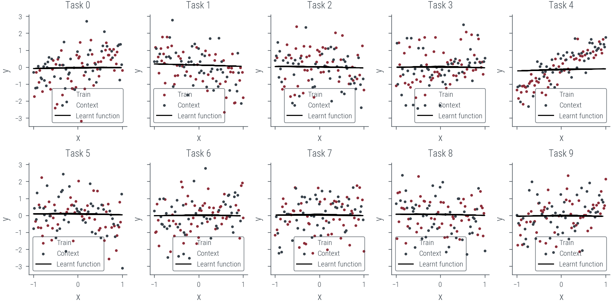
pip install git+https://github.com/sustainability-lab/ASTRACollecting git+https://github.com/sustainability-lab/ASTRA
Cloning https://github.com/sustainability-lab/ASTRA to /tmp/pip-req-build-uokk43yt
Running command git clone --filter=blob:none -q https://github.com/sustainability-lab/ASTRA /tmp/pip-req-build-uokk43yt
Resolved https://github.com/sustainability-lab/ASTRA to commit f0b6c0c0d39ae14b036d7f6a6a824e12cee7fa88
Installing build dependencies ... done
Getting requirements to build wheel ... done
Preparing metadata (pyproject.toml) ... done
Requirement already satisfied: pandas in /home/nipun.batra/miniforge3/lib/python3.9/site-packages (from astra-lib==0.0.2.dev12+gf0b6c0c) (2.1.1)
Requirement already satisfied: tqdm in /home/nipun.batra/miniforge3/lib/python3.9/site-packages (from astra-lib==0.0.2.dev12+gf0b6c0c) (4.66.1)
Requirement already satisfied: numpy in /home/nipun.batra/miniforge3/lib/python3.9/site-packages (from astra-lib==0.0.2.dev12+gf0b6c0c) (1.26.0)
Requirement already satisfied: matplotlib in /home/nipun.batra/miniforge3/lib/python3.9/site-packages (from astra-lib==0.0.2.dev12+gf0b6c0c) (3.5.1)
Requirement already satisfied: xarray in /home/nipun.batra/miniforge3/lib/python3.9/site-packages (from astra-lib==0.0.2.dev12+gf0b6c0c) (2023.8.0)
Collecting optree
Downloading optree-0.9.2-cp39-cp39-manylinux_2_17_x86_64.manylinux2014_x86_64.whl (319 kB)
|████████████████████████████████| 319 kB 5.1 MB/s
Requirement already satisfied: python-dateutil>=2.7 in /home/nipun.batra/miniforge3/lib/python3.9/site-packages (from matplotlib->astra-lib==0.0.2.dev12+gf0b6c0c) (2.8.2)
Requirement already satisfied: fonttools>=4.22.0 in /home/nipun.batra/miniforge3/lib/python3.9/site-packages (from matplotlib->astra-lib==0.0.2.dev12+gf0b6c0c) (4.43.1)
Requirement already satisfied: pillow>=6.2.0 in /home/nipun.batra/miniforge3/lib/python3.9/site-packages (from matplotlib->astra-lib==0.0.2.dev12+gf0b6c0c) (9.3.0)
Requirement already satisfied: cycler>=0.10 in /home/nipun.batra/miniforge3/lib/python3.9/site-packages (from matplotlib->astra-lib==0.0.2.dev12+gf0b6c0c) (0.12.1)
Requirement already satisfied: packaging>=20.0 in /home/nipun.batra/miniforge3/lib/python3.9/site-packages (from matplotlib->astra-lib==0.0.2.dev12+gf0b6c0c) (23.2)
Requirement already satisfied: kiwisolver>=1.0.1 in /home/nipun.batra/miniforge3/lib/python3.9/site-packages (from matplotlib->astra-lib==0.0.2.dev12+gf0b6c0c) (1.4.5)
Requirement already satisfied: pyparsing>=2.2.1 in /home/nipun.batra/miniforge3/lib/python3.9/site-packages (from matplotlib->astra-lib==0.0.2.dev12+gf0b6c0c) (3.1.1)
Requirement already satisfied: typing-extensions>=4.0.0 in /home/nipun.batra/miniforge3/lib/python3.9/site-packages (from optree->astra-lib==0.0.2.dev12+gf0b6c0c) (4.8.0)
Requirement already satisfied: tzdata>=2022.1 in /home/nipun.batra/miniforge3/lib/python3.9/site-packages (from pandas->astra-lib==0.0.2.dev12+gf0b6c0c) (2023.3)
Requirement already satisfied: pytz>=2020.1 in /home/nipun.batra/miniforge3/lib/python3.9/site-packages (from pandas->astra-lib==0.0.2.dev12+gf0b6c0c) (2023.3.post1)
Requirement already satisfied: six>=1.5 in /home/nipun.batra/miniforge3/lib/python3.9/site-packages (from python-dateutil>=2.7->matplotlib->astra-lib==0.0.2.dev12+gf0b6c0c) (1.16.0)
Building wheels for collected packages: astra-lib
Building wheel for astra-lib (pyproject.toml) ... done
Created wheel for astra-lib: filename=astra_lib-0.0.2.dev12+gf0b6c0c-py3-none-any.whl size=18547 sha256=55f98c0691926cb2d4e054b09386e4058030819bbf863a5161caf91e52fcd5ac
Stored in directory: /tmp/pip-ephem-wheel-cache-f1p2f46_/wheels/cd/44/cd/bb5605bfb1009031a707a97cf28f2eba493e872ddcffc6fbad
Successfully built astra-lib
Installing collected packages: optree, astra-lib
Successfully installed astra-lib-0.0.2.dev12+gf0b6c0c optree-0.9.2
Note: you may need to restart the kernel to use updated packages.### Hyper-Net for image reconstruction
from astra.torch.data import load_mnist
ds, ds_name = load_mnist()/home/nipun.batra/miniforge3/lib/python3.9/site-packages/astra/torch/data.py:11: UserWarning: TORCH_HOME not set, setting it to /home/nipun.batra/.cache/torch
warnings.warn(f"TORCH_HOME not set, setting it to {os.environ['TORCH_HOME']}")
100%|██████████| 9912422/9912422 [00:01<00:00, 7744753.54it/s]
100%|██████████| 28881/28881 [00:00<00:00, 37748736.00it/s]
100%|██████████| 1648877/1648877 [00:00<00:00, 3499620.93it/s]
100%|██████████| 4542/4542 [00:00<00:00, 9520504.13it/s]Downloading http://yann.lecun.com/exdb/mnist/train-images-idx3-ubyte.gz
Downloading http://yann.lecun.com/exdb/mnist/train-images-idx3-ubyte.gz to /home/nipun.batra/.cache/torch/data/MNIST/raw/train-images-idx3-ubyte.gz
Extracting /home/nipun.batra/.cache/torch/data/MNIST/raw/train-images-idx3-ubyte.gz to /home/nipun.batra/.cache/torch/data/MNIST/raw
Downloading http://yann.lecun.com/exdb/mnist/train-labels-idx1-ubyte.gz
Downloading http://yann.lecun.com/exdb/mnist/train-labels-idx1-ubyte.gz to /home/nipun.batra/.cache/torch/data/MNIST/raw/train-labels-idx1-ubyte.gz
Extracting /home/nipun.batra/.cache/torch/data/MNIST/raw/train-labels-idx1-ubyte.gz to /home/nipun.batra/.cache/torch/data/MNIST/raw
Downloading http://yann.lecun.com/exdb/mnist/t10k-images-idx3-ubyte.gz
Downloading http://yann.lecun.com/exdb/mnist/t10k-images-idx3-ubyte.gz to /home/nipun.batra/.cache/torch/data/MNIST/raw/t10k-images-idx3-ubyte.gz
Extracting /home/nipun.batra/.cache/torch/data/MNIST/raw/t10k-images-idx3-ubyte.gz to /home/nipun.batra/.cache/torch/data/MNIST/raw
Downloading http://yann.lecun.com/exdb/mnist/t10k-labels-idx1-ubyte.gz
Downloading http://yann.lecun.com/exdb/mnist/t10k-labels-idx1-ubyte.gz to /home/nipun.batra/.cache/torch/data/MNIST/raw/t10k-labels-idx1-ubyte.gz
Extracting /home/nipun.batra/.cache/torch/data/MNIST/raw/t10k-labels-idx1-ubyte.gz to /home/nipun.batra/.cache/torch/data/MNIST/raw
ds<xarray.Dataset>
Dimensions: (sample: 70000, channel: 1, x: 28, y: 28)
Coordinates:
* sample (sample) int64 0 1 2 3 4 5 ... 69994 69995 69996 69997 69998 69999
* channel (channel) int64 0
* x (x) int64 27 26 25 24 23 22 21 20 19 18 17 ... 9 8 7 6 5 4 3 2 1 0
* y (y) int64 0 1 2 3 4 5 6 7 8 9 10 ... 18 19 20 21 22 23 24 25 26 27
Data variables:
img (sample, channel, x, y) float32 0.0 0.0 0.0 0.0 ... 0.0 0.0 0.0 0.0
label (sample) float32 5.0 0.0 4.0 1.0 9.0 2.0 ... 2.0 3.0 4.0 5.0 6.0# Read 1000 images from ds xarray dataset into PyTorch tensors
print(ds['img'])
imgs = ds['img'].values[:1000]<xarray.DataArray 'img' (sample: 70000, channel: 1, x: 28, y: 28)>
array([[[[0., 0., 0., ..., 0., 0., 0.],
[0., 0., 0., ..., 0., 0., 0.],
[0., 0., 0., ..., 0., 0., 0.],
...,
[0., 0., 0., ..., 0., 0., 0.],
[0., 0., 0., ..., 0., 0., 0.],
[0., 0., 0., ..., 0., 0., 0.]]],
[[[0., 0., 0., ..., 0., 0., 0.],
[0., 0., 0., ..., 0., 0., 0.],
[0., 0., 0., ..., 0., 0., 0.],
...,
[0., 0., 0., ..., 0., 0., 0.],
[0., 0., 0., ..., 0., 0., 0.],
[0., 0., 0., ..., 0., 0., 0.]]],
[[[0., 0., 0., ..., 0., 0., 0.],
[0., 0., 0., ..., 0., 0., 0.],
...
[0., 0., 0., ..., 0., 0., 0.],
[0., 0., 0., ..., 0., 0., 0.]]],
[[[0., 0., 0., ..., 0., 0., 0.],
[0., 0., 0., ..., 0., 0., 0.],
[0., 0., 0., ..., 0., 0., 0.],
...,
[0., 0., 0., ..., 0., 0., 0.],
[0., 0., 0., ..., 0., 0., 0.],
[0., 0., 0., ..., 0., 0., 0.]]],
[[[0., 0., 0., ..., 0., 0., 0.],
[0., 0., 0., ..., 0., 0., 0.],
[0., 0., 0., ..., 0., 0., 0.],
...,
[0., 0., 0., ..., 0., 0., 0.],
[0., 0., 0., ..., 0., 0., 0.],
[0., 0., 0., ..., 0., 0., 0.]]]], dtype=float32)
Coordinates:
* sample (sample) int64 0 1 2 3 4 5 ... 69994 69995 69996 69997 69998 69999
* channel (channel) int64 0
* x (x) int64 27 26 25 24 23 22 21 20 19 18 17 ... 9 8 7 6 5 4 3 2 1 0
* y (y) int64 0 1 2 3 4 5 6 7 8 9 10 ... 18 19 20 21 22 23 24 25 26 27# Make the imgs as PyTorch tensors
imgs = torch.from_numpy(imgs)
imgs.shapetorch.Size([1000, 1, 28, 28])# Plot the first 10 images
fig, axes = plt.subplots(2, 5, figsize=(8, 4), sharex=True, sharey=True)
axes = axes.flatten()
for i, ax in enumerate(axes):
ax.imshow(imgs[i].view(28, 28).cpu().numpy(), cmap='gray')
ax.set_title(f'Image {i}')
ax.set_xticks([])
ax.set_yticks([])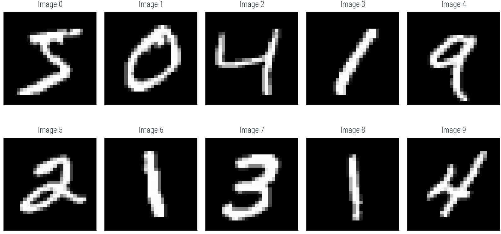
### Coodinate MLP for image reconstruction
class CoordMLP(nn.Module):
def __init__(self, in_dim=2, out_dim=1, hidden_dim=64):
super().__init__()
self.fc1 = nn.Linear(in_dim, hidden_dim)
self.fc2 = nn.Linear(hidden_dim, hidden_dim)
self.fc3 = nn.Linear(hidden_dim, out_dim)
def forward(self, x):
x = torch.sin(self.fc1(x))
x = torch.sin(self.fc2(x))
return self.fc3(x)coord = CoordMLP()
# Fit the model on the first image
optimizer = torch.optim.Adam(coord.parameters(), lr=0.01)
criterion = nn.MSELoss()
# Create input to the model
x = torch.linspace(-1, 1, 28)
y = torch.linspace(-1, 1, 28)
# Create a grid of x and y
x_grid, y_grid = torch.meshgrid(x, y)
# Flatten the grid
x_flat = x_grid.flatten()
y_flat = y_grid.flatten()
# Concatenate x and y to form the input
inp = torch.cat([x_flat.view(-1, 1), y_flat.view(-1, 1)], dim=1)
# Create the target
target = imgs[0].flatten()
for epoch in range(1000):
optimizer.zero_grad()
pred = coord(inp)
l = criterion(pred, target)
l.backward()
optimizer.step()
if epoch % 100 == 0:
print(f'Epoch {epoch} loss {l:.2f}')
/home/nipun.batra/miniforge3/lib/python3.9/site-packages/torch/functional.py:504: UserWarning: torch.meshgrid: in an upcoming release, it will be required to pass the indexing argument. (Triggered internally at ../aten/src/ATen/native/TensorShape.cpp:3483.)
return _VF.meshgrid(tensors, **kwargs) # type: ignore[attr-defined]
/home/nipun.batra/miniforge3/lib/python3.9/site-packages/torch/utils/_device.py:62: UserWarning: Using a target size (torch.Size([784])) that is different to the input size (torch.Size([784, 1])). This will likely lead to incorrect results due to broadcasting. Please ensure they have the same size.
return func(*args, **kwargs)RuntimeError: Expected all tensors to be on the same device, but found at least two devices, cuda:0 and cpu!# Plot the first 10 images
fig, axes = plt.subplots(2, 5, figsize=(8, 4), sharex=True, sharey=True)
axes = axes.flatten()
for i, ax in enumerate(axes):
ax.imshow(imgs[i], cmap='gray')
ax.set_title(f'Label: {ds["label"].values[i]}')
ax.axis('off')TypeError: Invalid shape (1, 28, 28) for image data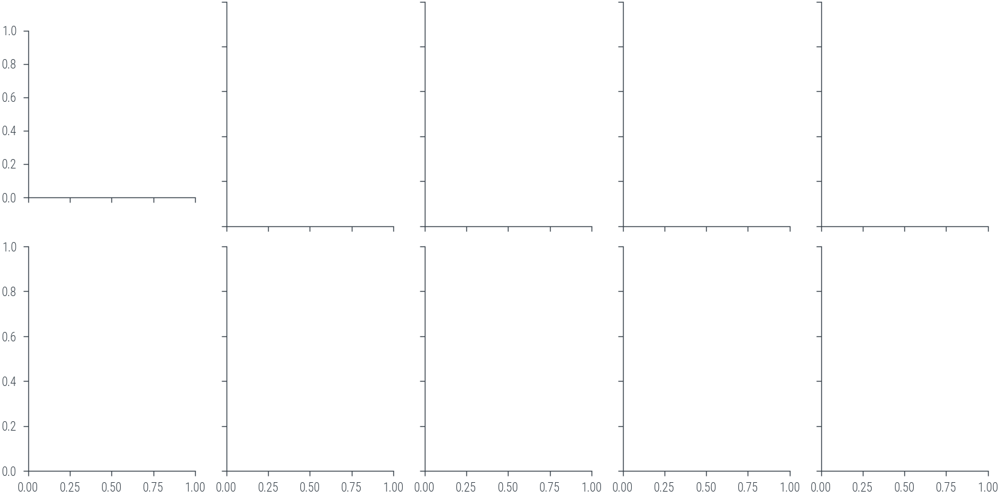